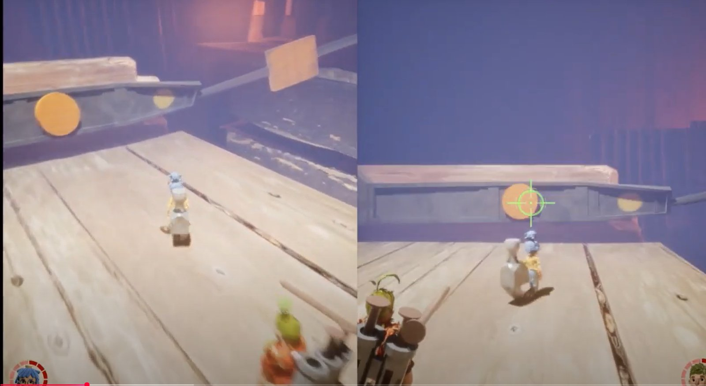
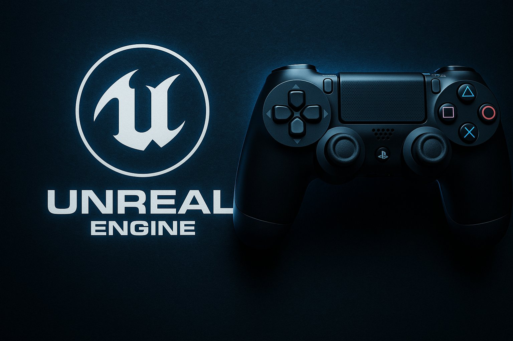
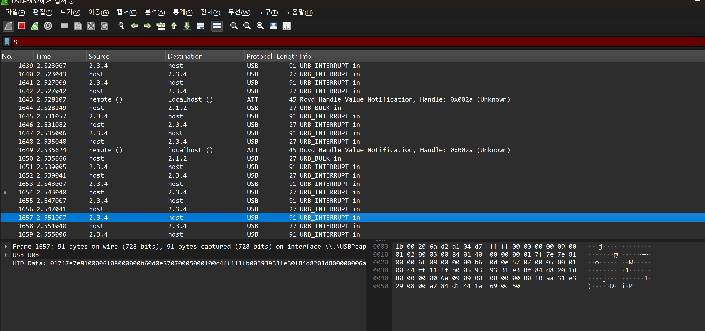
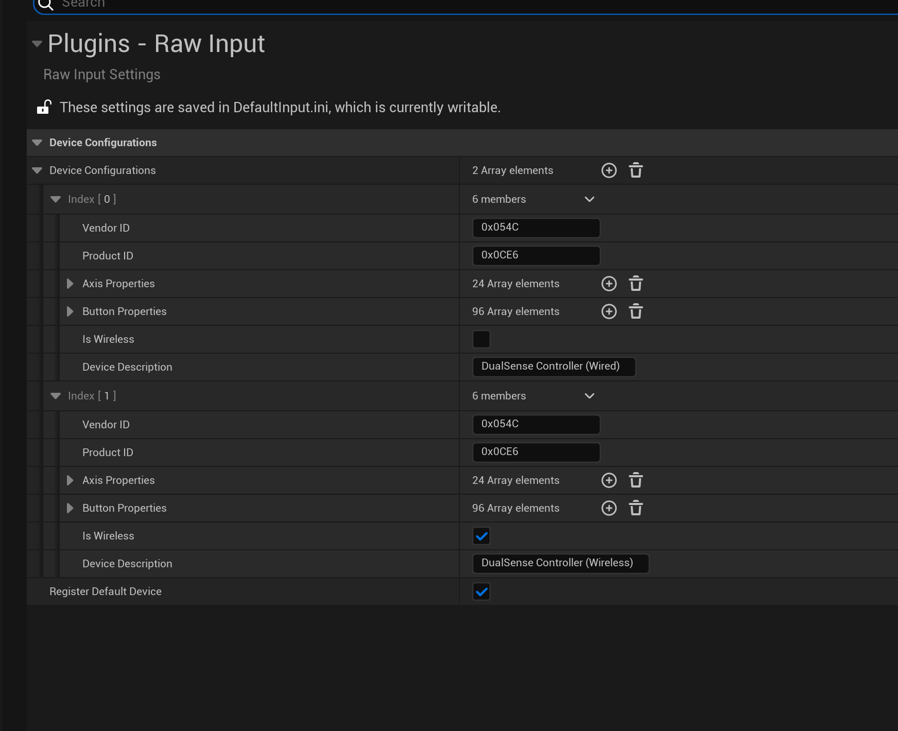
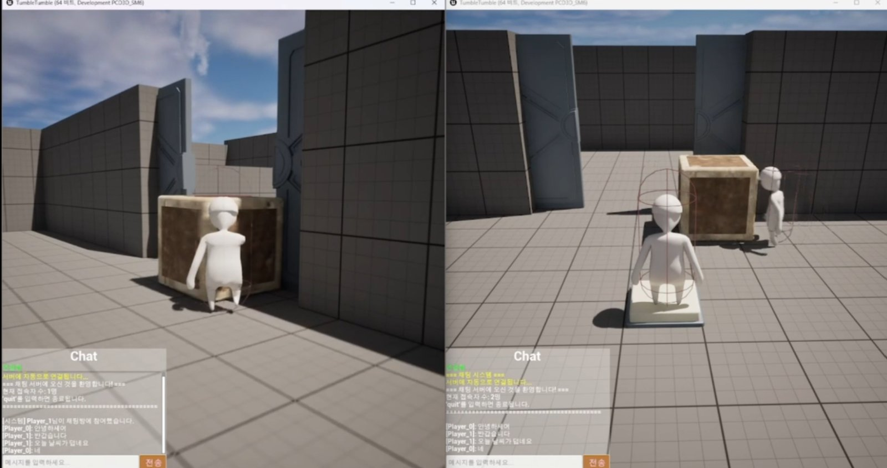
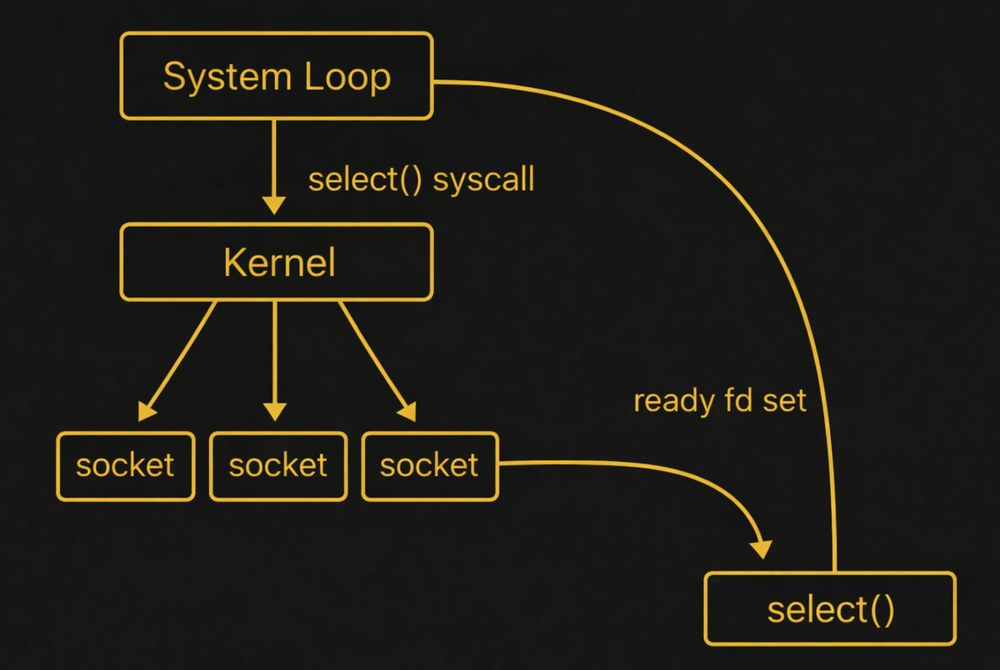
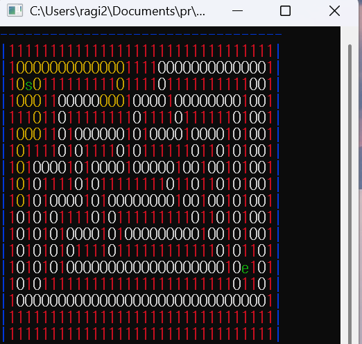
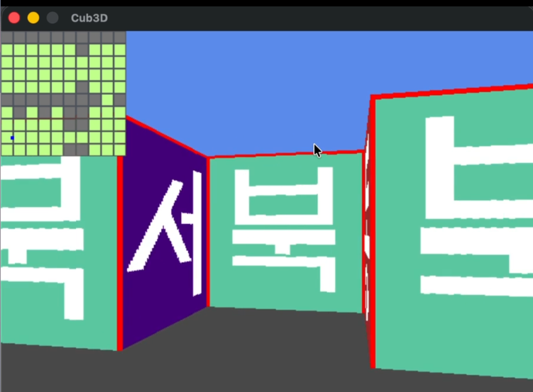

It Takes Two의 오두막 챕터 공구통 보스전 구간을 재현했습니다. 협동 플레이의 조작감과 화면 UX를 Unreal C++로 구현했습니다.
팀 구성: 5명 (언리얼 개발자 3명, 기획자 1명, TA 1명)
걷기 중 점프와 제자리 점프에서 앞으로 가는 힘의 크기가 다르고, 같은 방향키를 눌러도 현재 상태에 따라 캐릭터의 반응이 달라집니다. 초기에는 조건문으로 구현하려 했으나, 상태 조합이 늘어날수록 코드 복잡도가 급격히 증가했습니다.
모든 상태 전이를 if-else로 처리하면 케이스마다 예외 처리가 필요했고, 새로운 상태 추가 시 기존 코드를 모두 검토해야 하는 문제가 있었습니다. 알고리즘 문제에서 비트마스킹으로 상태 조합을 다룬 경험을 떠올려, 상태를 플래그로 관리하면 중첩 케이스를 체계적으로 정리할 수 있다고 판단했습니다.
캐릭터 상태 관리 컴포넌트를 구현하고, 각 상태를 비트 플래그로 정의했습니다. OR 연산으로 상태를 중첩시키고, AND 연산으로 특정 상태 조합을 검사하는 방식으로 전이 규칙을 단순화했습니다.
상태 중첩을 자료구조 수준에서 처리해 분기문을 대폭 줄였고, 모든 상태 전이 규칙을 한 곳에서 관리할 수 있게 되었습니다.
패드 스틱은 360도 연속 입력이 가능하지만, 원작은 8방향으로만 이동합니다. 단순히 각도를 45도씩 나누는 방식은 경계값 처리가 불안정했습니다.
입력 벡터를 가장 가까운 8개 방향축 중 하나로 투영하는 방식이 필요했습니다. 이전에 탱크 시뮬레이션에서 AI가 플레이어 방향을 판단할 때 내적을 활용한 경험이 있었고, 이를 응용하면 8방향 중 최적 방향을 수학적으로 명확히 결정할 수 있다고 생각했습니다.
8개의 단위 방향 벡터를 미리 정의하고, 입력 벡터와 각각 내적 연산을 수행했습니다. 내적값이 가장 큰 방향을 최종 이동 방향으로 선택하는 방식으로 구현했습니다.
입력이 항상 8개 방향 중 하나로 안정적으로 정리되어, 원작과 유사한 명확한 이동 감각을 구현할 수 있었습니다.
bool UCSR_P_AComp_CharicStateMannage::AddState(int32 NewState)
{
if (this->TotalControlState(NewState))
{
this->CurrentState = this->CurrentState | NewState;
UE_LOG(LogTemp, Warning, TEXT("%d %d"), this->CurrentState, NewState);
this->SpendStateToAnim();
return (true);
}
return (false);
}
bool UCSR_P_AComp_CharicStateMannage::CanAddJumpMove()
{
if (this->CurrentState & (DIE | REBORN | PRESS | ATTACK | AIRSIT | MOVE))
return false;
if (this->CurrentState & JUMP)
return true;
return false;
}AddState()에서 상태를 OR로 중첩시키고, 진입 가능 여부는 TotalControlState()로 판단합니다.
int32 UCSR_P_AComp_CharicMovement::ChooseDirectionFlag(FVector2D& PadDirection_)
{
UCSR_Direction_GameInstance* GameInstance = Cast(
UGameplayStatics::GetGameInstance(this->GetWorld())
);
const TArray& Directions = GameInstance->Directions;
float RelativeDValue = -1;
int32 flag = 0, answer = 0;
for (FVector2D param : Directions)
{
flag = flag + 1;
float CalcDot = FVector2D::DotProduct(PadDirection_, param);
if (CalcDot > RelativeDValue)
{
answer = flag;
RelativeDValue = CalcDot;
}
}
return (answer);
} 8방향 축과 입력 벡터의 내적을 계산해, 가장 큰 내적 값을 갖는 방향을 선택합니다.

Windows 환경에서 Unreal Engine이 유선 PlayStation 컨트롤러 DualSense의 입력을 받을 수 있도록 RawInput 플러그인을 분석하고, 누락된 D-pad 입력 처리를 직접 구현했습니다.
팀 구성: 1명 (개인 프로젝트)
Windows는 PlayStation 전용 API를 제공하지 않아 DirectInput이나 RawInput으로 입력을 처리해야 하는데, Unreal Engine은 기본적으로 PlayStation 컨트롤러를 즉시 사용하기 어려웠습니다. RawInput 플러그인이 HID Report 매핑을 지원하긴 하지만, PlayStation 컨트롤러는 Unreal이 기대하는 표준 매핑과 달라서 D-pad 입력이 처리되지 않았습니다. DS4Windows나 Steam 같은 외부 프로그램으로 우회할 수 있지만, 외부 도구 없이 Unreal 내부에서 해결하고자 했습니다.
Wireshark로 원시 HID Report 데이터를 캡처해 분석한 결과, D-pad 입력 시 9번째 바이트의 값이 변화하는 것을 확인했습니다.

RawInput 플러그인 코드를 확인해보니 9번째 바이트에 대한 D-pad 해석 로직이 없었습니다. 이 바이트 값을 어떻게 버튼 상태로 변환할지 직접 구현이 필요했습니다.
RawInput 설정에 DualSense 장치 정보를 등록해 HID Report를 받을 수 있도록 했습니다.

RawInputWindows.cpp에서 ReportPtr[8], 즉 9번째 바이트의 값을 읽고, 8방향과 중립을 포함한 D-pad 입력을 Up, Down, Left, Right 4개 버튼 상태로 변환해 ButtonData 배열에 매핑했습니다.
유선 연결 기준으로 DualSense D-pad 입력이 Unreal 내부 입력 시스템으로 정상 전달되도록 개선했습니다. 왜 작동하지 않는지 추측으로 끝내지 않고, 원시 HID Report부터 플러그인 내부까지 추적해서 누락된 부분을 찾아냈고, 이를 직접 구현해서 해결했습니다.
if (ReportPtr[0] == 0x01 && InRawInputDataBuffer->data.hid.dwSizeHid > 8)
{
uint8 dpadValue = ReportPtr[8] & 0x0F;
bool isDpadUp = (dpadValue == 0 || dpadValue == 1 || dpadValue == 7);
bool isDpadRight = (dpadValue == 1 || dpadValue == 2 || dpadValue == 3);
bool isDpadDown = (dpadValue == 3 || dpadValue == 4 || dpadValue == 5);
bool isDpadLeft = (dpadValue == 5 || dpadValue == 6 || dpadValue == 7);
const int32 DpadUpIndex = 11;
if (DpadUpIndex < DeviceEntry->ButtonData.Num())
DeviceEntry->ButtonData[DpadUpIndex].bButtonState = isDpadUp;
...
DeviceEntry->bNeedsUpdate = true;
}Wireshark로 확인한 D-pad 값의 위치인 9번째 바이트를 읽어 4방향 버튼 상태로 변환합니다.

Human Fall Flat처럼 협동해서 진행하는 간단한 멀티플레이 프로토타입입니다.
게임플레이 서버와 별개로 채팅 전용 서버를 분리해 모듈화했습니다.
팀 구성: 2명 (언리얼 개발자 2명)
Unreal Engine의 RPC 시스템을 통해 채팅 기능을 구현할 경우, 게임플레이 로직과 동일한 서버에서 채팅이 처리되기 때문에 게임 서버 부하 증가 및 확장성에 제한이 발생합니다.
추후 고려 가능한 기능인 1대 1 채팅, 대화 로그 저장 등을 고려하면 Unreal Server가 너무 많은 역할을 담당하게 되어 유지보수에서 불리합니다.
채팅 전용 서버를 구성하고, 게임 로직과는 별도로 통신하도록 구조를 분리했습니다. Windows에서는 Winsock2를 학습하여 적용하고, select()를 이용한 멀티플렉싱 방식으로 다중 클라이언트를 구현했습니다.

게임 서버와 채팅 서버를 분리해 각 서버의 역할을 명확히 했습니다. 채팅 서버는 Winsock2로 직접 구현하고, Unreal 클라이언트는 플랫폼별 구현이 내부적으로 추상화된 FSocket으로 연결해 플랫폼에 관계없이 동일한 클라이언트 네트워크 코드를 유지할 수 있었습니다.
while (this->_isRunning)
{
this->_selectManager.setupFdSet();
this->_selectManager.addSocket(this->_tcpSocket.getSocket());
SOCKET client_sockets[ClientManager::MAX_CLIENTS];
int socket_count = _clientManager.getAllSockets(client_sockets,
ClientManager::MAX_CLIENTS);
for (int i = 0; i < socket_count; ++i)
this->_selectManager.addSocket(client_sockets[i]);
...매 루프마다 fd_set을 초기화하고, 서버 소켓 + 모든 클라 소켓을 한 곳에 등록합니다.
ClientManager로 소켓 수집을 분리해 모듈화했습니다.
SelectManager::Result select_result = this->_selectManager.executeSelect(1);
...
// TIMEOUT이면 continue, 에러면 루프 종료/리턴, SUCCESS면 아래 ready 처리로 진행
...select()는 준비된 소켓이 있을 때만 다음 처리로 넘어갑니다.
TIMEOUT/FAIL/SUCCESS로 상태 관리를 명확히 두었습니다.
if (this->_selectManager.isSocketReady(this->_tcpSocket.getSocket()))
this->handleNewConnection();
for (int i = 0; i < ClientManager::MAX_CLIENTS; ++i)
{
SOCKET client_socket = this->_clientManager.getClientSocket(i);
if (client_socket != INVALID_SOCKET &&
this->_selectManager.isSocketReady(client_socket))
if (this->handleClientMessage(i) == false)
{
this->announceLeave(i);
this->_clientManager.removeClient(i);
}
}
}서버 소켓이 ready면 accept, 클라 소켓이 ready면 recv 처리합니다.

상용 게임 엔진(Unreal)의 핵심 아키텍처를 이해하기 위해 Windows 콘솔 환경에서 Input → Update → Render → Present 루프를 직접 구현했습니다. Level-Actor 구조와 생명주기 관리를 통해 엔진의 기본 설계 원리를 학습했으며, A* 경로 탐색 시뮬레이터를 제작해 실용성을 검증했습니다.
팀 구성: 1명 (개인 프로젝트)
커서 기반 출력은 출력 순서가 불안정하고, 프레임 단위로 렌더링 흐름을 제어하기 어려웠습니다. 화면이 깜빡이고 잔상이 남는 문제가 발생했습니다.
ScreenBuffer를 만들어서 화면을 버퍼에 먼저 그린 뒤 한 번에 출력하는 방식으로 바꿨습니다. 이렇게 하니 그리는 작업과 출력하는 작업을 확실히 나눌 수 있었습니다.
화면 갱신이 안정화되었고, 엔진 루프에서 Render와 Present 단계가 명확히 구분되어 Unreal Engine의 렌더링 파이프라인 개념을 이해하는 데 도움이 되었습니다.
Update/Draw 순회 중 Actor가 추가되거나 삭제되면 컨테이너 참조가 깨지고 크래시가 발생했습니다.
Unreal의 지연 삭제 방식을 참고하여, Destroy() 호출 시 즉시 삭제하지 않고 만료 표시만 남기고, 실제 정리는 프레임 끝 한 지점에서만 처리하도록 규칙을 고정했습니다.
Update/Draw 순회가 안정화되었고, 추가 기능이 늘어나도 정리 타이밍이 흔들리지 않습니다.
보드 전체를 매 프레임 다시 그리는 방식은 보드 크기가 커질수록 비효율적이었습니다.
변경된 셀만 Dirty로 표시하고, Dirty 셀만 다시 그리도록 변경했습니다.
매 프레임 전체 갱신에서 변경 영역만 갱신하는 방식으로 전환하여 렌더링 비용을 크게 절감했습니다.
while (true)
{
if (quit) break;
QueryPerformanceCounter(&time);
currentTime = time.QuadPart;
float deltaTime = float(currentTime - previousTime) / float(frequency.QuadPart);
if (deltaTime >= targetOneFrameTime)
{
ProcessInput();
Update(deltaTime);
Draw();
SavePreviouseKeyStates();
previousTime = currentTime;
if (mainLevel) mainLevel->ProcessAddedAndDestroyedActor();
}
}프레임 끝에서만 Actor 정리를 수행하는 안전 지점을 엔진 루프에 고정했습니다.

42Seoul 과제로 진행한 레이캐스팅 기반 3D 렌더링 프로젝트입니다. 2D 격자 맵을 DDA 알고리즘으로 탐색해 1인칭 시점 화면을 구현하며, 저수준 그래픽 프로그래밍과 수학적 렌더링 원리를 학습했습니다.
팀 구성: 2명
시야각에 따라 DDA가 같은 칸을 반복하며 무한 루프에 빠짐
광선 방향으로 step을 먼저 확정하고, first_dist를 정확히 초기화. 더 가까운 축부터 한 칸씩 이동하도록 루프 고정
모든 각도에서 첫 충돌 지점을 안정적으로 탐색
광선 길이로 벽 높이를 계산하면 화면 가장자리에서 거리가 과장됨
카메라 화면 평면에 수직인 거리 값으로 벽 높이를 계산하도록 변경
회전 중에도 벽 높이가 일정하게 유지되어 왜곡 제거
타일 단위로 매 프레임 다시 그리면 불필요한 픽셀 연산 누적
배경은 구역별 이미지로 미리 생성, 플레이어 위치만 갱신
미니맵을 켠 상태에서도 프레임 안정성 유지
void ray_casting(t_map *map, t_detail_info *info)
{
while (info->hit == 0)
{
if (info->first_dist_x < info->first_dist_y)
{
info->first_dist_x += info->squ_per_dist_x;
info->map_x += info->step_x;
info->side = 0;
}
else
{
info->first_dist_y += info->squ_per_dist_y;
info->map_y += info->step_y;
info->side = 1;
}
if (map->map[info->map_x][info->map_y] == '1')
info->hit = 1;
}
}first_dist_x, first_dist_y를 비교해 더 가까운 축부터 한 칸 이동하며 벽 탐색
2022.03 - 2024.02
동료 학습 기반 소프트웨어 교육. C/C++ 시스템 프로그래밍과 협업 능력 향상
2024.06 - 2024.11
Unreal Engine 게임 개발 과정. Blueprint/C++ 실전 프로젝트
2024.12 - 2025.06
Unreal Engine 심화 학습 과정
2025.09 - 2026.04
매일 백준 1문제 이상 풀이 및 토론
2024.12 - 2025.08
C++ 기초 플러스 독서 및 토론
2023.10 - 2023.11
한 권으로 읽는 컴퓨터 구조와 프로그래밍
2023.06 - 2023.09
운영체제(공룡책) 독서 및 토론
프로젝트를 진행하며 학습한 내용을 기록하고 공유합니다.